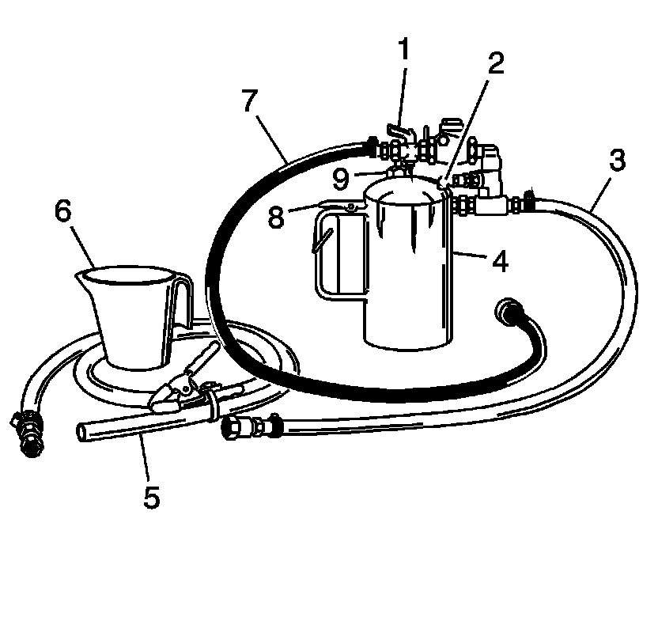
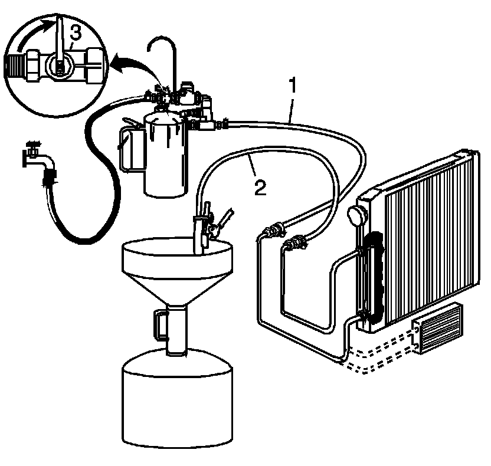
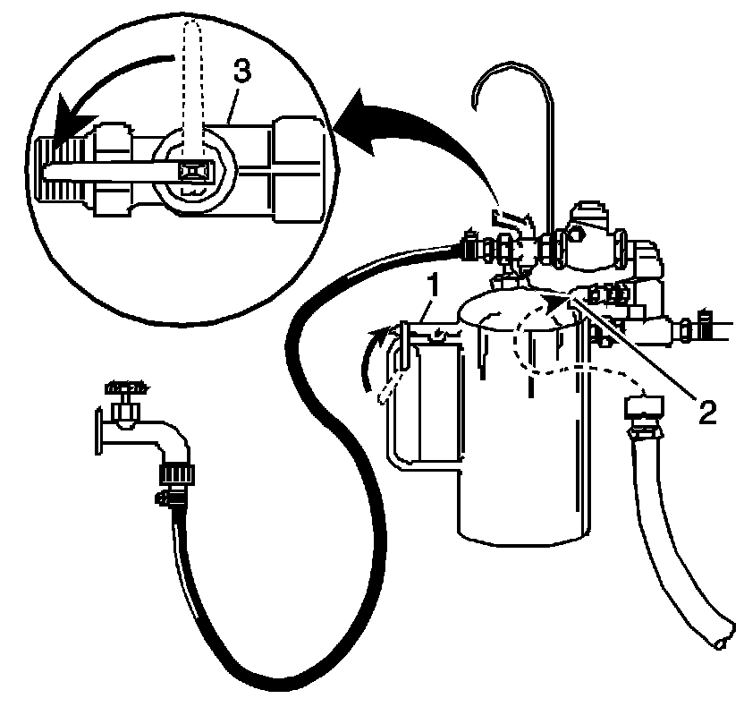
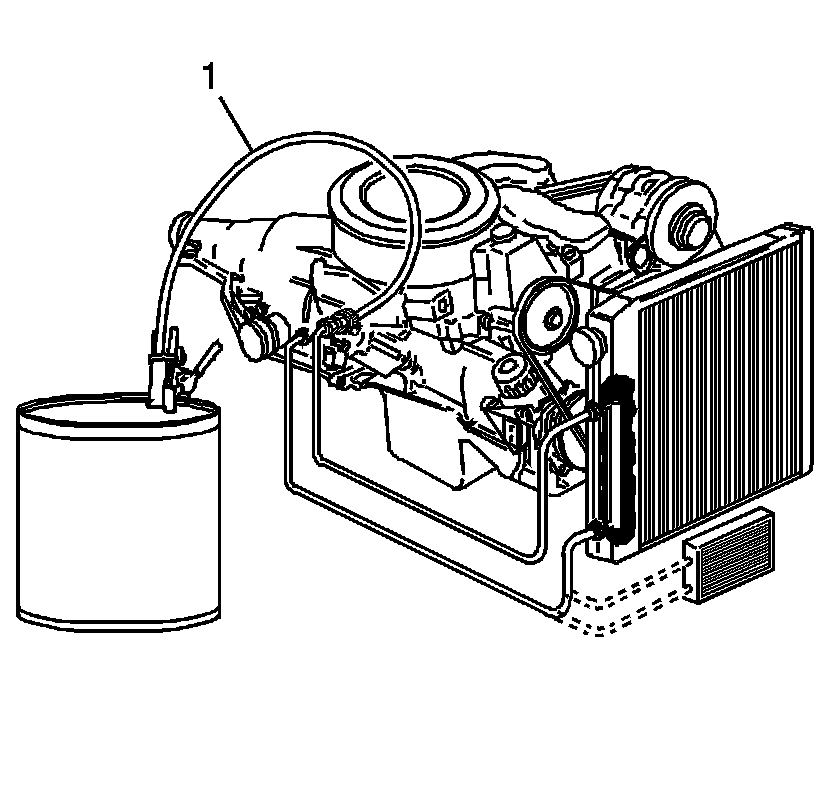

Automatic Transmission Oil Cooler Flushing and Flow Test (J 35944-A)
Transmission Fluid Cooler Flushing and Flow Test (J 35944A)
GM studies indicate that plugged or restricted transmission oil coolers and pipes cause insufficient transmission lubrication and elevated operating temperatures which can lead to premature transmission wear-out. Many repeat repair cases could have been prevented by following published procedures for transmission oil cooler flushing and flow checking. This procedure includes flow checking and flushing the auxiliary transmission oil cooler, if equipped.
Important - FWD: Use the J 35944-A or equivalent to flush the transmission oil cooler and the oil cooler pipes whenever the transaxle is removed for the following repairs:
* Torque converter
* Oil pump
* Oil pump drive shaft
* Drive sprocket support
* Transaxle overhaul complete
* Transaxle assembly replacement
Important - RWD: Use the J 35944-A or equivalent to flush the transmission oil cooler and the oil cooler pipes whenever the transmission is removed for the following repairs:
* Torque converter
* Oil pump
* Turbine shaft
* Transmission overhaul complete
* Transmission assembly replacement
Only GM Goodwrench DEXRON(R)III automatic transmission fluid should be used when doing a repair on a GM transmission.
Time allowance for performing the cooler flow checking and flushing procedure has been included in the appropriate labor time guide operations since the 1987 model year. The service procedure steps for oil cooler flushing are as follows:
Cooler Flow Check and Flushing Steps
1. Tools Required
2. Preparation
3. Back Flush
4. Forward Flush
5. Flow Check
6. Clean-up
Tools Required
* J 35944-A Transmission Oil Cooler and Line Flusher
* J 35944-22 Transmission Oil Cooler Flushing Fluid
* Measuring cup
* Funnel
* Water supply - hot water recommended
* Water hose, at least 16 mm (5/8 in) ID
* Shop air supply with water/oil filters, regulator and pressure gage
* Air chuck with clip, if available
* Oil drain container
* Pail with lid - 19 L (5 gallon)
* Eye protection
* Rubber gloves
Preparation
1. During the installation of the repaired or replacement transmission, do not connect the oil cooler pipes.
Preparation:

Notice: Do not use solutions that contain alcohol or glycol. Use of solutions that contain alcohol or glycol may damage the oil cooler line flusher, oil cooler components and/or transmission components.
Important: The J 35944-22 is environmentally safe, yet powerful enough to cut through transmission fluid to dislodge any contaminants from the cooler. The safety precautions on the label, regarding potential skin and eye irritations associated with prolonged exposure, are typical precautions that apply to many similar cleaning solutions. It should be noted that according to GM, use of other non-approved fluids for cooler flushing can have an adverse reaction to the seals inside the transmission.
2. Remove the fill cap (9) on the J 35944-A and fill the flusher tank (4) with 0.6 L (20-21 oz) of J 35944-22 , using the measuring cup (6). Do not overfill.
3. Install the fill cap (9) on the J 35944-A and pressurize the flusher tank (4) to 550-700 kPa (80-100 psi), using the shop air supply at the tank air valve (2).
4. With the water supply valve (1) on the J 35944-A in the OFF position, connect the water supply hose from the J 35944-A to the water supply at the faucet.
5. Turn ON the water supply at the faucet.
Back Flush
1. Inspect the transmission oil cooler pipes for kinks or damage. Repair as necessary.
Forward Flush:

2. Connect the J 35944-A to the oil cooler feed top connector.
3. Clip the discharge hose (2) onto the oil drain container.
4. Attach the J 35944-A to the undercarriage of the vehicle with the hook provided and connect the flushing system feed supply hose (1) from the J 35944-A to the bottom connector oil cooler return pipe.
5. Turn the J 35944-A water supply valve (3) to the ON position and allow water to flow through the oil cooler and pipes for 10 seconds to remove any remaining transmission fluid. If water does not flow through the oil cooler and pipes, the cause of the blockage must be diagnosed and the plugged component must be repaired or replaced. Continue with the cooler flushing and flow check procedure once the blockage is corrected.
6. Turn the J 35944-A water supply valve (3) to the OFF position and clip the discharge hose onto a 19 liter (5 gallon) pail with a lid, to avoid splashback.

Important: Flushing for approximately 2 minutes in each cooler line direction will result in a total of about 8-10 gallons of waste fluid. This mixture of water and flushing fluid is to be captured in a bucket or similar container.
7. Turn the J 35944-A water supply valve (3) to the ON position and depress the trigger (1) to mix cooler flushing solution into the water flow. Use the clip provided on the handle to hold the trigger (1) down. The discharge will foam vigorously when the solution is introduced into the water stream.
8. Flush the oil cooler and pipes with water and solution for 2 minutes. During this flush, attach the shop air supply 825 kPa (120 psi) to the flushing system feed air valve (2) located on the J 35944-A , for 3-5 seconds at the end of every 15-20 second interval to create a surging action.
9. Release the trigger (1) and turn the J 35944-A water supply valve (3) to the OFF position.
Forward Flush
Forward Flush:
1. Disconnect both hoses (1 and 2) from the oil cooler pipes and connect them to the opposite oil cooler pipe. This will allow the oil cooler and pipes to be flushed in the normal flow direction.
2. Repeat Step 6 and 7 of the Back Flush.
3. Release the trigger (1) of the J 35944-A and allow water only to rinse the oil cooler and pipes for 1 minute.
4. Turn the J 35944-A water supply valve (3) to the OFF position and turn OFF the water supply at the faucet.
5. Attach the shop air supply to the flushing system feed air valve (2) on the J 35944-A and blow out the water from the oil cooler and pipes. Continue, until no water comes out of the discharge hose.
Flow Test
Flow Test:

Important: The Flow Test must be performed after the flush to ensure that all flushing solution and water is removed from the oil cooling system.
1. Disconnect the hose from the oil cooler pipe. Connect the oil cooler feed pipe, top connector, to the transmission for normal flow.
2. Clip the discharge hose (1) to an empty oil container.
3. Confirm the transmission is filled with automatic transmission fluid. Refer to Fluid Capacity Specifications (5L40-E/5L50- E Automatic Transmission) for the correct automatic transmission fluid capacity.
4. Start the engine with the transmission in PARK range and run for 30 seconds after fluid begins to flow from the discharge hose (1). A minimum of 1.9 L (2 quarts) must be discharged during this 30 second run time.
5. If the fluid flow meets or exceeds 1.9 L (2 quarts) in 30 seconds, connect the oil cooler feed pipe to the front connector on the transmission.
6. If fluid flow is less than 1.9 L (2 qt) in 30 seconds, perform the following diagnosis:
1. Disconnect the J 35944-A discharge hose (1) from the oil cooler return pipe.
2. Disconnect the oil cooler feed pipe at the radiator.
3. Connect the J 35944-A discharge hose (1) to the oil cooler feed pipe, radiator end.
4. Clip the discharge hose (1) onto the oil drain container.
5. Start the engine with the transmission in PARK range and run for 30 seconds after fluid begins to flow from the discharge hose (1). A minimum of 1.9 L (2 qt) must be discharged during this 30 second run time.
7. If the amount of transmission fluid flow remains less than 1.9 L (2 qt) in 30 seconds, inspect the oil cooler feed pipe, top connector, for restrictions or damage. If no condition is found with the feed pipe, inspect the transmission.
Clean-up
1. Disconnect the water supply hose from the J 35944-A and bleed any remaining air pressure from the flusher tank.
2. Remove the fill cap from the J 35944-A and return any unused flushing solution to its container. Rinse the J 35944-A with water. Do not store theJ 35944-A with flushing solution in it.
3. After every third use, clean the J 35944-A as described in the instructions included with the tool.
4. Dispose of any waste water/solution and transmission fluid in accordance with local regulations.